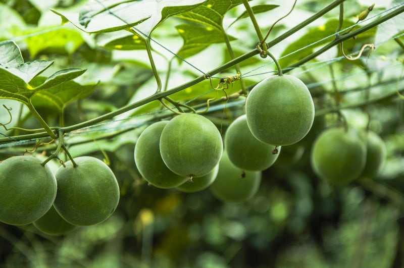
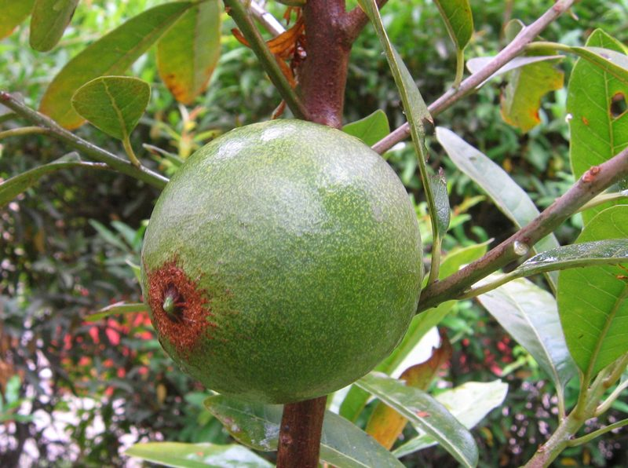
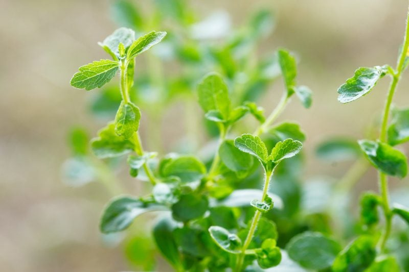
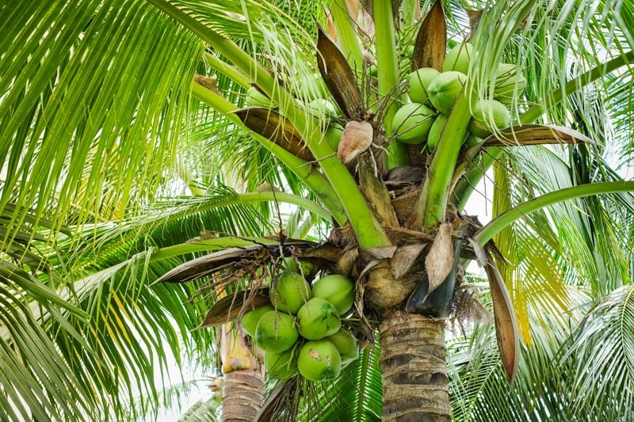

Below I have mapped out some sugar substitutes that can be suitable for diabetics as well as for those who wish to reduce their sugar intake. When looking at sweeteners, our interest ought to lie on where they range within the glycemic index. The glycemic index (GI) measures the actual impact of these foods on our blood sugar. Paying attention to the sugar content of foods isn’t just geared toward people with diabetes. By monitoring the intake of sugars, you also help to prevent the risk of cardiovascular disease, type 2 diabetes, weight gain, metabolic syndrome, stroke, depression, chronic kidney disease, the formation of gallstones, neural tube defects, uterine fibroids, cancers of the breast, colon, prostate, and pancreas, (ran out of breath) and so much more.
Since “sugars” don’t grow on trees, vines, or in the ground in their granulated or liquid form, I thought that I would research how the following sugars are grown. The photos shown in this post represent the sugars in their whole, unprocessed form.

Markus Sweet
Made from Lohan Guo Monk Fruit and Erythritol, a natural alcohol sugar found in the human body made from non-GMO plant sources. Monk fruit is a perennial vine that climbs or creeps via tendrils. It has heart-shaped leaves, and the fruit is smooth and yellow-brownish or green-brownish in color.
Health Benefits
- Glycemic Index: 0 / Table Sugar: 68
- It’s classified as an antioxidant that fights free radicals.
- It passes right through the body without being absorbed and does not affect the gastrointestinal tract: no gas or diarrhea.
- Does not raise blood sugar or insulin! Great for people with diabetes.
- Does not feed Candida or yeast!
Tastes Like
- It tastes like brown sugar with a hint of caramel.
Available In
- Powder form
- You can order (here).
How to Use
- Use it measure for measure in place of sugar (1:1 ratio).
- Depending on the recipe, I recommend further powdering the Markus Sweet powder to avoid any gritty texture, especially for raw chocolate.

Lucuma Powder
Lucuma powder is a natural sweetener made from the Peruvian lucuma fruit. The fruit of lucuma is unusual because it is neither juicy nor moist. The thin skin is shiny green, and the orange flesh is dry, almost crumbly, with the consistency of boiled egg yolk but with a delicious smell of maple syrup. It grows on 65-foot evergreen trees.
Health Benefits
- Glycemic Index: 25 / Table Sugar: 68
- It is a suitable sugar replacement for people with diabetes.
- Lucuma provides only 2 grams of fruit sugars for every 11 grams of carbohydrate, providing long-lasting energy without spiking your blood sugar.
- It is a valuable source of carbohydrates, fiber, and B vitamins, which are crucial for healthy bowel movements, is rich in niacin, which helps prevent heart disease, and contains iron, potassium, calcium, and phosphorous, all required for healthy cell function.
Tastes Like
- It has a hint of maple and butterscotch flavor.
Available In
- Powder form
- You can order it (here).
How to Use
- It is not as sweet as sugar. For example, 1 teaspoon of cane sugar represents 4g of sugars. In 1 teaspoon of lucuma powder, there is only 0.5 g of sugars.
- Great to add to smoothies, raw cookies, bars, and cakes.
Mesquite
Mesquite powder is a temptingly sweet, natural sweetener prepared from the beans of the Mexican mesquite tree. Indigenous to dry climates in parts of South America and the southwestern U.S., these drought-tolerant trees have a long taproot to access water from underground sources. Mesquite is sustainably cultivated because it requires no irrigation, chemicals, or fertilizers.
Health Benefits
- Glycemic Index: 25 / Table Sugar: 68
- It actively balances blood sugar levels. Suitable for people with diabetes.
- Mesquite is packed with proteins, vitamins, minerals (including magnesium, calcium, potassium, iron, and zinc), amino acids and antioxidants that you won’t find in processed sugars.
- Mesquite contains serotonin, which helps combat depression, apigenin, which boasts anti-inflammatory, anti-allergic, antibacterial, and antiviral properties, tryptamine, known for its antibacterial effect, and quercetin, which can help prevent diabetes.
- Mesquite is also a good source of fiber and protein.
Tastes Like
- The taste is often described as mild, slightly sweet and nutty with subtle hints of caramel and molasses.
Available In
- Powder/flour form.
- You can order it (here).
How to Use
- Substitute mesquite powder for up to half of the regular flour in recipes, reducing (or eliminating) other sweeteners based on personal preference. I recommend starting with a ratio of 25-30% of mesquite flour.
- Mesquite can be used to sweeten tea, coffee, and smoothies.
- Sprinkle it on top of your breakfast cereal or oatmeal.
- Add a few tablespoons to your next batch of homemade granola.
Xylitol
Xylitol is made from natural fibers found in a variety of fruits and vegetables. It is a sugar alcohol, which is a low-digestible carbohydrate that resists starches. Look for xylitol derived from a natural source like birch bark and not from man-made synthetic chemicals or GMO corn.
Health Benefits
- Glycemic index: 7 / Table Sugar: 68
- It is absorbed more slowly than sugar and doesn’t contribute to high blood sugar levels or the hyperglycemia caused by insufficient insulin response; it rapidly became a popular sweetener for people with diabetes.
- It is beneficial for those suffering from metabolic syndrome, a common disorder that includes insulin resistance, hypertension, hypercholesterolemia, and an increased risk of blood clots.
- Xylitol is known for its unique, ‘tooth friendly’ qualities.
- Caution: Keep consumption in moderation as it has been shown to cause digestive discomfort in some people.
- On an important side note, for all of my friends out there with pets, xylitol side effects are very toxic to pets.
Tastes Like
- Xylitol tastes pretty much like refined white sugar.
Available In
How to Use it
- While many artificial sweeteners are much more concentrated than sugar, Xylitol has the same amount of sweetness. Use a 1:1 ratio.
- Xylitol absorbs moisture more than sugar does. You may want to add a little more of the liquid ingredients to your recipes to get the best end product.
- Xylitol has a gritty texture. Therefore it is best to grind it in a coffee grinder, Magic Bullet, or food processor before adding it to a recipe.

Stevia
Stevia is a naturally-sourced, zero-calorie sweetener used as a natural sugar substitute and flavoring ingredient for hundreds of years. Stevia is a natural origin plant extract from the leaves of the stevia plant.
Health Benefits
- Glycemic Index: 0 / Table Sugar: 68
- It is completely safe for diabetics and a useful tool in combatting high blood sugar levels and Candida.
- Stevia is rich in beneficial nutrients including magnesium, chromium, potassium, selenium, niacin, manganese, and zinc.
- Up to 300 times sweeter than sugar.
Tastes Like
- Chemical compounds found in the stevia plant interact with both the sweet and bitter receptors on the tongue, leading to its signature bitter aftertaste. There are many brands and forms in which stevia comes in. My suggestion is to taste test different brands and types, finding the one perfect for you.
Available In
- Liquid
- Powder
- Whole leaf
- Read ingredient labels, so you don’t end up with some with maltodextrin, alcohol, and artificial flavors.
How to Use
- Its intense sweetness and possible bitter aftertaste can be a turn-off for some.
- When sweetening to taste with stevia, always start by adding only the smallest amount possible, a few droplets of liquid stevia or a tiny pinch of the powdered form.
- 1 Tbsp sugar: 1/4 tsp stevia powder
- 1 Tbsp sugar: 2-3 drops liquid stevia
- When taking a recipe that usually has sugars in it (whether it’s coconut sugar, coconut nectar, or maple syrup), I have found it works best to reduce the amount of sugar and add in stevia.

Coconut Nectar
When the coconut tree is tapped, it produces a nutrient-rich “sap” that exudes from the coconut blossoms of the Coco Nuciferapalm tree.
Health Benefits
- Glycemic Index: 35 / Table Sugar: 68
- It is low on the glycemic index and contains a wide range of minerals, vitamin C, broad-spectrum B vitamins, 17 amino acids, and has a nearly neutral pH.
Tastes Like
- The neutral flavor of the syrup means that it will not affect the taste of the food, unlike some other sweeteners.
Comes In
- Liquid (very sticky)
- You can order it (here).
How to Use
- Can be used 1:1 ratio to other liquid sweeteners (agave/honey/maple syrup).
Coconut Sugar/Crystals
Often referred to as coconut crystals, coconut sugar, and coconut palm sugar. Coconut sugar is a palm sugar produced from the sap of the flower bud stem of the coconut palm. Coconut sugar is the dehydrated and crystallized version of the coconut nectar taken one step further.
Health Benefits
- Glycemic Index: 35 / Table Sugar: 68
- Coconut sugar contains trace amounts of vitamin C, potassium, phosphorous, magnesium, calcium, zinc, iron, and copper.
Tastes Like
- It has a richer taste than sugar, somewhat similar to brown sugar.
- Coconut sugar doesn’t taste like coconut.
Comes In
- Powdered form
- Crystal form
- You can order it (here).
How to Use
- Use it measure for measure in place of sugar (1:1 ratio).
- Depending on the recipe, I recommend powdering the coconut crystals to avoid any gritty texture, especially for raw chocolate.
Yacon Root
Yacon syrup is extracted from the roots of the Yacon plant. The root itself can be enjoyed raw like jicama.
Health Benefits
- Glycemic Index: 1 / Table Sugar: 68
- Yacon’s sweetness comes from low-calorie, low-carb FOS (fructooligosaccharides) that taste sweet, but won’t affect blood sugar levels. It can also help feed your gut’s healthy bacteria to promote good digestive health.
- Yacon contains prebiotic materials[8], stimulating the growth and health of the microflora in our bodies. When our probiotic bacteria are well-taken care of and healthy, our body can maximize its intake of vitamins and minerals.
- Yacon is high in soluble fiber.
Tastes Like
- It has a rich, caramel taste similar to that of a rich syrup such as molasses.
Comes In
- Liquid form
- Powder form
- Flake form
- You can order it (here).
How to Use
- I use yacon syrup in recipes that traditionally call for molasses. It has a very, very thick viscosity.
- Yacon syrup is simple to use and can be added to smoothies and other drinks for instant sweetness.
- Yacon syrup can simply be drizzled onto pancakes or other desserts, as an alternative to maple syrup.
- Yacon is a straight substitute for sugar or syrup in almost any recipe.
- Add the flakes to trail mixes and granola recipes.
Disclaimer
This website is not intended to provide medical advice. All content, including text, graphics, images, and information available on this site is for general informational, entertainment, and educational purposes only. The content is not intended to be a substitute for professional diagnosis or treatment. The author of this site is not responsible for any adverse effects that may occur from the application of the information on this site. You are encouraged to make your own healthcare decisions, based on your research and in partnership with a qualified healthcare professional.